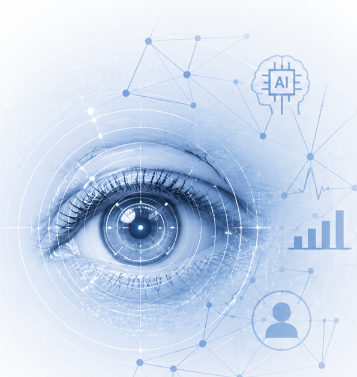

WEBCAM-BASED GAZE AI · 실증 진행 중
시선이 말하는 마음,
시선이 말하는 마음,
NeuroLens가 읽습니다
일반 웹캠만으로 5분간 시선행동을 측정해 심리 상태를
객관적 행동 신호로 분석하는 AI 심리측정 및 웰니스 Agent 케어 플랫폼
9,200명+@
AI 학습 데이터
4,514만+@
시선좌표 데이터
1,600명
경기도 8개교 현장 실증
AUC 0.819
정서적 스트레스 신호 선별(실증)